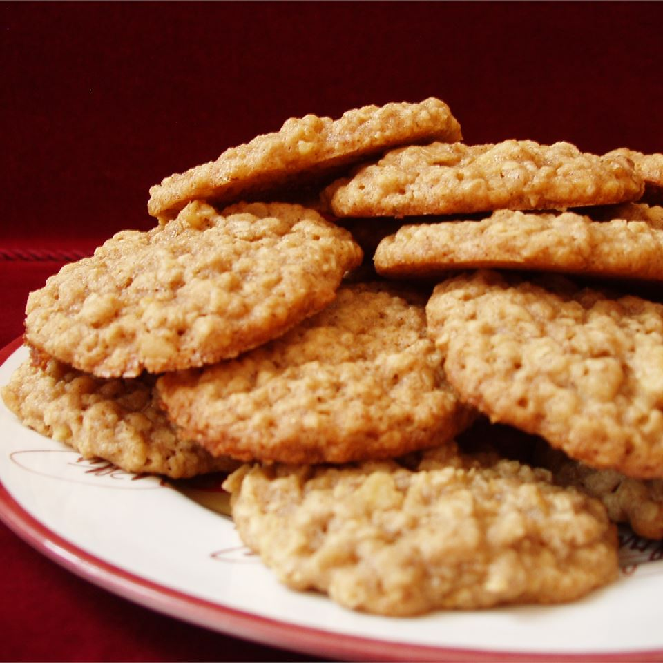

Oatmeal cookies

This is a chewy oatmeal cookie.
Ingredients
- 1 cup butter, softened
- 1 cup packed brown sugar
- 1/2 cup white sugar
- 2 eggs
- 1 1/4 cups all-purpose flour
- 1/2 teaspoon baking soda
- 1 teaspoon salt
- 3 cups quick cooking oats
- 1 cup chopped walnuts
Steps
- Preheat the oven to 325 degrees F (165 degrees C).
- In a large bowl, cream together butter, brown sugar, and white sugar until fluffy.
Beat in eggs one at a time, then stir in the vanilla.
Combine the flour, baking soda, salt, and cinnamon; stir into the creamed mixture.
Mix in oats and nuts until just blended. Drop by heaping teaspoonfuls onto ungreased cookie sheets.
Cookies should be at least 2 inches apart.
- Bake for about 12 minutes in the preheated oven. Cool cookies on a wire rack.